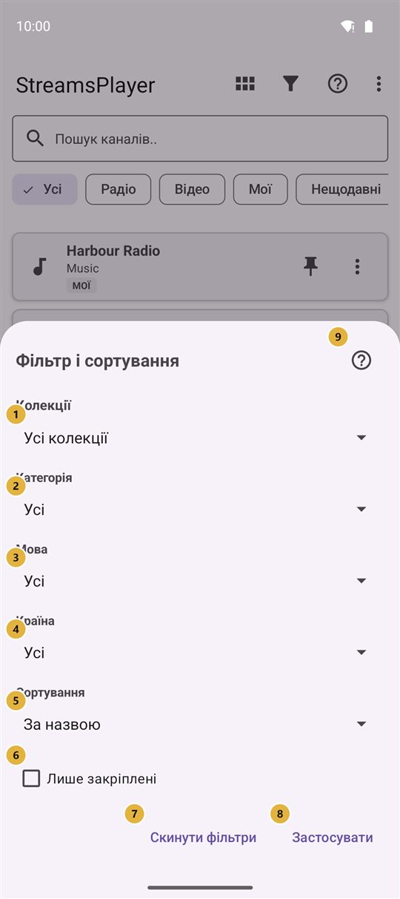
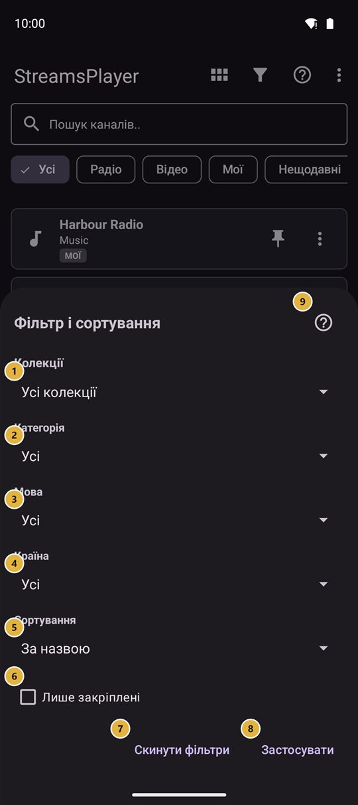

Фільтр і сортування
Для чого цей екран
Звузьте довгий список до потрібних станцій і виберіть порядок. Аркуш відкривається поверх головного екрана, а список змінюється, коли ви натискаєте «Застосувати».


Порядок дій
- Виберіть колекцію 1, якщо потрібна готова група каналів.
- Звузьте список за категорією 2, мовою 3 і країною 4. У кожному списку лише значення, які є у ваших каналах.
- Виберіть порядок у полі «Сортування» 5.
- Позначте «Лише закріплені» 6, щоб бачити тільки закріплені канали.
- Натисніть «Застосувати» 8. Щоб почати знову, натисніть «Скинути фільтри» 7.
Елементи
1КолекціїГотова група каналів.
Виберіть одну колекцію, щоб бачити лише її канали, або «Усі колекції», щоб бачити всі.
- Скасування
- Виберіть «Усі колекції».
2КатегоріяВид передач.
Музика, новини, розмовні й так далі, як їх називає каталог каналів. «Усі» залишає всі категорії.
- Скасування
- Виберіть «Усі».
3МоваМова каналу.
Показує лише канали вибраною мовою. «Усі» залишає всі мови.
- Скасування
- Виберіть «Усі».
4КраїнаЗвідки канал.
Показує лише канали вибраної країни. «Усі» залишає всі країни.
- Скасування
- Виберіть «Усі».
5СортуванняПорядок списку.
За назвою, темою, мовою чи країною або з нещодавно відтворених чи доданих каналів. Порядок діє нижче за закріплені канали: вони завжди лишаються вгорі.
- Скасування
- Виберіть інший порядок і натисніть «Застосувати».
6Лише закріпленіЛише закріплені вами канали.
Швидкий шлях до улюблених. Закріплені канали й так стоять угорі списку; ця позначка ховає решту.
- Скасування
- Зніміть позначку й натисніть «Застосувати».
7Скинути фільтриПрибирає всі фільтри й закриває аркуш.
Список повертається до всіх каналів в останньому вибраному порядку. Текст пошуку теж очищається.
- Скасування
- Відкрийте аркуш і задайте фільтри знову.
8ЗастосуватиПоказує налаштований список.
Застосовує колекцію, категорію, мову, країну, порядок і позначку закріплених разом та закриває аркуш. Рядок над списком називає те, що ввімкнено.
9ДовідкаВідкриває цю сторінку.
Аркуш лишається відкритим під сторінкою; «Назад» повертає до нього.
- Сполучення клавіш
- F1